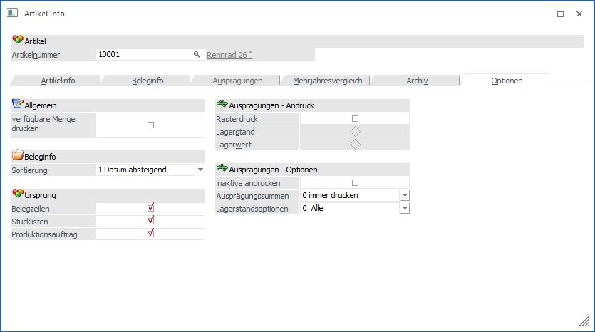
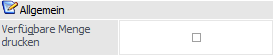
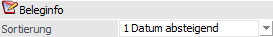
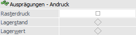
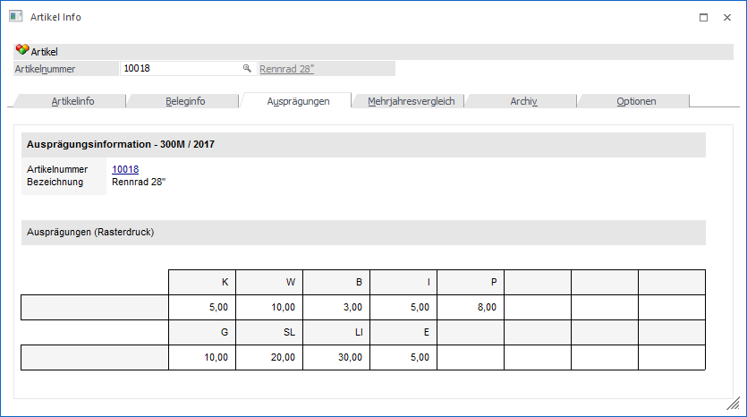
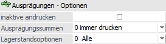

Im Register "Optionen" können Einstellungen für die Darstellung der Artikel Info getroffen werden.
Hinweis
Die Einstellungen werden benutzerspezifisch gespeichert.

Allgemein

Ø Verfügbare Menge drucken
Wird diese Option aktiviert so werden im Register "Artikel" und im Register "Ausprägungen" die verfügbare Menge zum Systemdatum berechnet und angezeigt.
Beleginfo

Ø Sortierung
An dieser Stelle kann definiert werden, ob die Beleginfo (Register "Beleginfo") nach "0 - Laufnummer" oder "1 - Datum absteigend" ausgegeben werden soll.
Ursprung
In diesem Bereich kann definiert werden, ob die Anzahl der Zeilen aus den Bereichen…
Ø Belegzeilen
Ø Stücklisten
Ø Produktionsauftrag
… in der Artikelinfo mit angezeigt werden sollen. Sind die Optionen aktiviert, kann es ggf. zu einer Wartezeit für die Ermittlung des Ergebnisses kommen.
Ausprägungen - Andruck

Ø Rasterdruck
Wird die Option "Rasterdruck" aktiviert, so werden für die Anzeige von Ausprägungen sogenannte Sub-Formulare verwendet und somit in Rasterform angedruckt.
Dabei werden jene Einstellungen berücksichtigt, die im Menüpunkt "Ausprägungsoptionen" angegeben sind.
Je nach weiterer Einstellung wird der "Lagerstand" oder der "Lagerwert" angezeigt.
Beispiel - Artikel mit einer Ausprägung - Rasterdruck nach Lagerstand

Ausprägungen - Optionen

Wenn der Rasterdruck aktiviert wurde, dann werden die folgenden Einstellungen "inaktive andrucken", "Ausprägungssummen" und "Lagerstandsoptionen" nicht berücksichtigt.
Ø inaktive andrucken
An dieser Stelle kann eingestellt werden, ob inaktive Ausprägungen im Register "Ausprägungen" dargestellt werden sollen.
Ø Ausprägungssummen
Mit Hilfe der Auswahlbox "Ausprägungssummen" kann definiert werden, ob Ausprägungssummen angezeigt werden sollen. Hierfür stehen folgende Varianten zur Verfügung:
ü 0 - immer drucken
Durch diese
Option werden bei Hauptartikel mit Zwischenartikeln (also entweder Artikel mit 2
Ausprägungen oder Artikel mit mindestens einer Ausprägung + Charge/Ident) nach
allen Ausprägungen die Ausprägungssummen angedruckt.
ü 1 - nie drucken
Durch diese
Option werden keine Ausprägungssummen angedruckt.
ü 2 - nur Summen drucken
Durch
diese Option werden nur die Ausprägungssummen, aber keine Artikel
angedruckt.
Hinweis
Wenn diese Option bei einem Artikel gesetzt ist, der keine Zwischenartikel verwendet (nur eine Ausprägung oder nur Charge/Ident), werden die einzelnen Artikel angedruckt.
Ø Lagerstandsoptionen
An dieser Stelle kann Aufgrund des Lagerstands definiert werden, welche Ausprägungen ausgegeben werden sollen.
ü 0 - Alle Artikel
Es werden alle
Ausprägungen ausgewertet.
ü 1 - mit Lagerbewegung
Es werden
alle Ausprägungen ausgewertet, die im Lager zumindest einmal bewegt wurden.
Dabei wird der Lagerstand nicht berücksichtigt.
ü 2 - mit Lagerstand größer 0
Es
werden alle Ausprägungen ausgewertet, die einen positiven Lagerstand haben.
Dabei werden Ausprägungen, die zwar Lagerbewegungen aufweisen, aber deren
Lagerstand 0 ist, nicht berücksichtigt.
ü 3 - mit Lagerstand ungleich
0
Hier werden alle Ausprägungen angedruckt, deren Lagerstand nicht 0 ist,
also auch Ausprägungen, die einen negativen Lagerstand (lagerneutrale Artikel)
aufweisen.
ü 4 - mit Lagerstand kleiner
0
Hier werden alle Ausprägungen angedruckt, deren Lagerstand kleiner 0
ist.
ü 5 - mit Lagerstand gleich 0 und
Lagerwert ungleich 0
Hier werden alle Ausprägungen angedruckt, deren
Lagerstand zwar 0 ist, die jedoch einen Lagerwert aufweisen (egal ob dieser
negativ oder positiv ist).
ü 6 - mit Lagerstand gleich 0
(unabhängig vom Lagerwert)
Hier werden alle Ausprägungen angedruckt, deren
Lagerstand 0 ist, unabhängig davon wie hoch der Lagerwert ist.
ü 7 - mit komm. Menge größer
0
Mit dieser Option werden nur jene Ausprägungen ausgegeben, die eine
kommissionierte Menge größer 0 aufweisen.